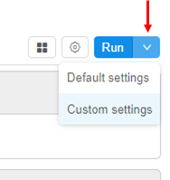
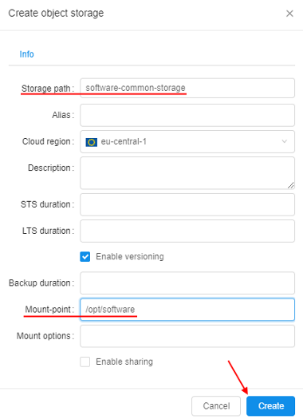
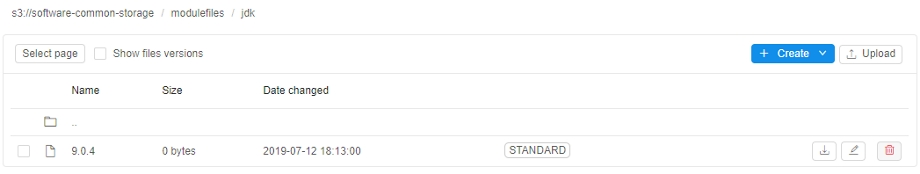
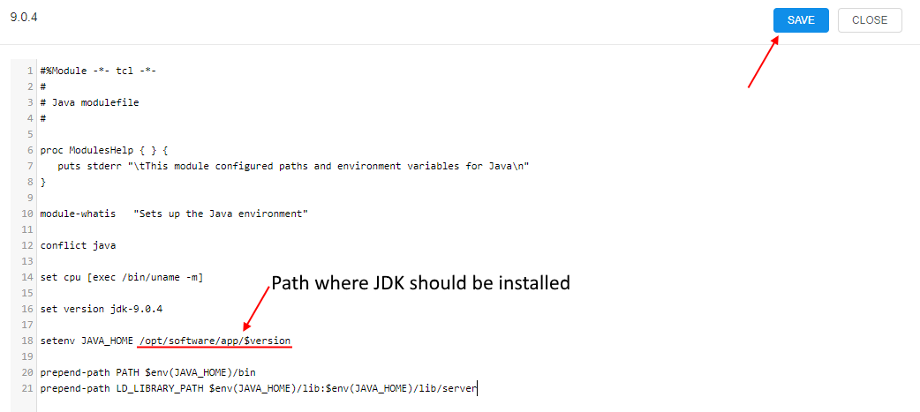
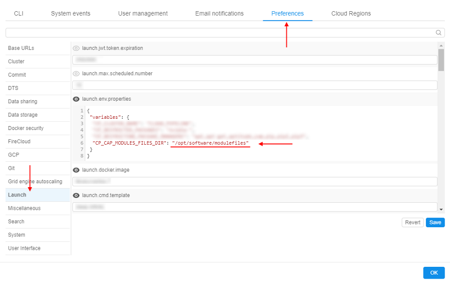

15.2. Using Terminal access
Terminal access is available to the OWNER of the running job and users with ADMIN role. With sufficient permissions, Terminal access can be achieved to any running job.
For more information see 13. Permissions.Also you can get a terminal access to the running job using the
pipeCLI. For more details see here.
All software in the Cloud Pipeline is located in Docker containers, and we can use Terminal access to the Docker container via the Interactive services.
This can be useful when:
- usage of a new bioinformatics tool shall be tested;
- batch job scripts shall be tested within a real execution environment;
- docker image shall be extended and saved (install more packages/bioinformatics tools) - see 10.4. Edit a Tool.
Using Terminal access
Both Pipelines and Tools can be run as interactive services. The example below shows launching tool scenario:
- Navigate to the list of registered Tools and search for the Tool required (e.g. "base-generic-centos7").
- Go to the Tool page and click the arrow near the Run button → Select "Custom Settings".
 - Launch Tool page form will load (it's the same form that is used to configure a batch run). The following fields shall be filled:
- Node type
- Disk size
- Cloud Region
- "Start idle" box should be chosen. Click the Launch button when all above parameters are set.
- Once a run is scheduled and configured SSH hyperlink will appear in the "Run Log" form in the right upper corner of the form.
Note: This link is only visible to the owner of the run and users with ROLE_ADMIN role assigned.

- Clicking the SSH link will load a new browser tab with an authenticated Terminal.
Note: If an unauthorized user will load a direct link, "Permission denied" error will be returned.

Example: using of Environment Modules for the Cloud Pipeline runs
Configure of Environment Modules using is available only for users with ADMIN role.
The Environment Modules package provides for the dynamic modification of a user's environment via modulefiles.
In the example below, we will use Modules to switch between two versions of Java Development Kit.
- At the beginning we will create a storage for all
JDKversions files andmodulefiles. For that: open the Library, click Create + → Storages → Create new object storage - While creating - specify a storage name and mount point, e.g.
/opt/software:

Click the Create button. - Open the created storage and create two folders in it:
- app - here we will upload
JDKfiles - modulefiles - here we will create
modulefilesfor eachJDKversion
- app - here we will upload
- Open the modulefiles folder, create the jdk folder in it.
- Open the jdk folder, create
modulefilefor theJDK ver. 9.0.4- name it 9.0.4:
 - Click the file name, click the Fullscreen button at the file content panel:
- At the popup click the EDIT button and input the
modulefilecontent, e.g. for theJDK ver. 9.0.4:

Save it. - Repeat steps 5-7 for the
JDK ver. 11.0.2. At the end you will have twomodulefilesin the jdk folder:

- Open System Settings popup, click the Preferences tab, select Launch section.
Into thelaunch.env.propertiesfield add a new variable -CP_CAP_MODULES_FILES_DIR. That variable specify path to the sourcemodulefiles.

As you can see - during the run, when the storage created at step 2 will be mounted to the node in the specified mount-point (/opt/software), created aboveJDKmodulefileswill be available in the modulefiles folder created at step 3 - by the path/opt/software/modulefiles.
Save and close the Settings popup. - Go to the Tool page, open the tool page you want to use the
Environment Moduleswith and click the arrow near the Run button → Select "Custom Settings".
- At the Launch page expand Advanced section.
- In the Limit mounts field select the storage created at step 2 (see more details here).
- Click the Add system parameter button
- In the popup select the
CP_CAP_MODULESitem and click the OK button:
CP_CAP_MODULESparameter enables installation and using theModulesfor the current run. While installing,Moduleswill be configured to the sourcemodulefilespath from theCP_CAP_MODULES_FILES_DIRlaunch environment variable (that was set at step 9). IfCP_CAP_MODULES_FILES_DIRis not set - defaultmodulefileslocation will be used.
- Launch the tool.
- Open Run logs page, wait until InstallEnvironmentModules task will appear and check that the
Moduleswas installed successfully:
- Wait until SSH hyperlink will appear in the right upper corner. Click it.
- In the terminal run the command
module useto check the ource path to themodulefiles:
- Now, we will install
JDK. For thever. 9.0.4run the following commands:
# Download "jdk 9.0.4" archive
wget https://download.java.net/java/GA/jdk9/9.0.4/binaries/openjdk-9.0.4_linux-x64_bin.tar.gz
# Extract archive content
tar -zxf openjdk-9.0.4_linux-x64_bin.tar.gz
# Copy "jdk 9.0.4" files into the mounted data storage
cp -r jdk-9.0.4 /opt/software/app/jdk-9.0.4
For the ver. 11.0.2 run the following commands:
# Download "jdk 11.0.2" archive
wget https://download.java.net/java/GA/jdk11/9/GPL/openjdk-11.0.2_linux-x64_bin.tar.gz
# Extract archive content
tar -zxf openjdk-11.0.2_linux-x64_bin.tar.gz
# Copy "jdk 11.0.2" files into the mounted data storage
cp -r jdk-11.0.2 /opt/software/app/jdk-11.0.2
Now, you can check the facilities of the Environment Modules package.
Load the available modulefiles list:
Load the JDK ver. 11.0.2:
Switch to the JDK ver. 9.0.4:

Unload all JDK versions: